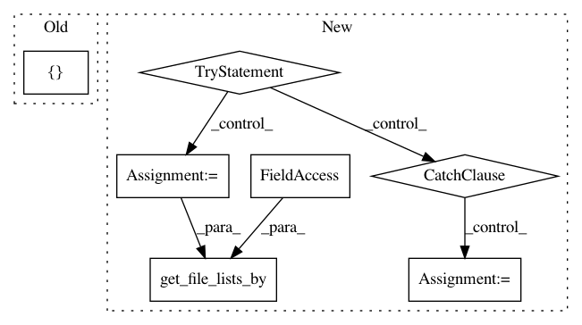

e3700cd9c3d556c96bd4eff893669baa679a3083,niftynet/application/autoencoder_application.py,AutoencoderApplication,initialise_dataset_loader,#AutoencoderApplication#Any#Any#Any#,36
Before Change
self.readers = [ImageReader(["feature"])]
self.readers[0].initialise(data_param,
task_param,
[file_lists])
// if self.is_training or self._infer_type in ("encode", "encode-decode"):
// mean_var_normaliser = MeanVarNormalisationLayer(image_name="image")
// self.reader.add_preprocessing_layers([mean_var_normaliser])
After Change
self.autoencoder_param.inference_type, SUPPORTED_INFERENCE)
else:
self._infer_type = None
try:
reader_phase = self.action_param.dataset_to_infer
except AttributeError:
reader_phase = None
file_lists = data_partitioner.get_file_lists_by(
phase=reader_phase, action=self.action)
// read each line of csv files into an instance of Subject
if self.is_evaluation:
NotImplementedError("Evaluation is not yet "
"supported in this application.")
In pattern: SUPERPATTERN
Frequency: 3
Non-data size: 7
Instances
Project Name: NifTK/NiftyNet
Commit Name: e3700cd9c3d556c96bd4eff893669baa679a3083
Time: 2018-05-27
Author: wenqi.li@ucl.ac.uk
File Name: niftynet/application/autoencoder_application.py
Class Name: AutoencoderApplication
Method Name: initialise_dataset_loader
Project Name: NifTK/NiftyNet
Commit Name: 72e0907d7784f62157906818686da273ab6aa7ed
Time: 2018-09-11
Author: wenqi.li@ucl.ac.uk
File Name: niftynet/contrib/segmentation_bf_aug/segmentation_application_bfaug.py
Class Name: SegmentationApplicationBFAug
Method Name: initialise_dataset_loader
Project Name: NifTK/NiftyNet
Commit Name: c25036261ee9d9e9c79099b4e7938d591cbda7b5
Time: 2018-05-27
Author: wenqi.li@ucl.ac.uk
File Name: niftynet/contrib/regression_weighted_sampler/isample_regression.py
Class Name: ISampleRegression
Method Name: initialise_dataset_loader